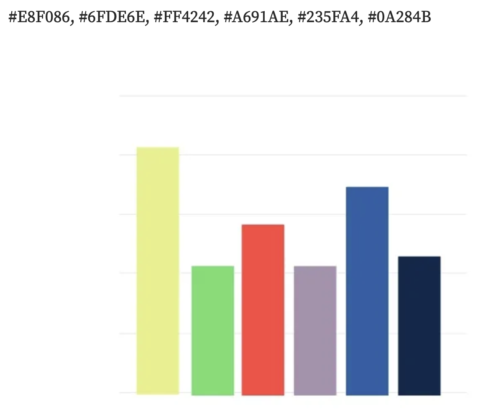

Reflections on the final project
These reflections center on my experience developing my final project for this class, Visualizating Utah's Population Growth.
Design considerations
Potential process change
In hindsight, a timeboxed effort to preemptive explore the data before committing to visualization sketches may have helped. Having departed from the DAV program at the GC two years ago and moving out of direct data work one year ago, I've enjoyed moving away from a stricter data analysis practice. Spending time analyzing the data outside of visualizing it with D3 may have better informed my proposed designs to tell a specific story.
Clarity & simplicity
My emphasis when designing this project on clarity and simplicity grew out of anxiety about my design competency and understanding. Still keeping these values in mind, I can offer the following examples of how clarity and simplicity were achieved.
- Visualization colors are selected to stand out from one another
- Fonts are easy readable even while highlighting with a cursor
- Shapes drawn by D3 have a stroke to outline when they start and stop
- Mousing over a visualization element changes the styling so that
it's apparent which element is being hovered over
- Colors change subtly on hover
- Strokes become slightly stronger when moused over
- Et cetera
Graph types we didn't cover in class
In this case, I created a stacked bar chart, which is a variant of bar charts we made in class, and a circle pack for hierarchical data between regions, divisions and states. Building these chart types, especially the circle pack, provided an extra challenge, and helped shape meaningful views on the data related to migration types and populations for my project topic.Color choice
In principle, I believe 'accessibility is for everyone'. While I don't always observe it in practice, I believe that as people's lives and contexts change, they can benefit from considerations made for accessibility. In this case, I focused on using accessible color schemes for a selfish reason.
I used two online resources to develop my inclusive color palettes:
- Inclusive Color Palettes for the Web by Allie Ofisher
- Accessible color palette generator available via Venngage
The most useful thing I learned
Locating a single useful thing I learned while working on this project this semester is difficult. But I can list a couple with reasons why I found them useful.
How critiques helped shape my project
The critique that had the greatest impact on my project was to take a comparative approach to my exploration of Utah's population growth during the years covered by the 2020 US Census. This recommendation helped give me something too talk about when I realized it was too late to bring in other data sources to tell the story I originally proposed.
Cutting project scope
My final output differed from what was proposed in my prospectus quite a bit. A general comment would be that my prospectus would involve multiple datasets to correlate
Major challenge
Wrangling my own curiousity about learning the ins-and-outs of D3/Javascript was the biggest challenge in completing my final project.
Data wrangling
When I began my final project for the class, I anticipated some data transformation needs. Having worked in data engineering previously, I've used Python and SQL to process raw data into aggregate tables an untold number of times. Outside of enriching the US migration dataset with regions and divisions specified by the US Census Board, I decided to perform as many data transformations as possible using Javascript. This decision resulted in a few knock-on effects to how the visualizations were executed under time constraints.
Rabbit holes
The seduction of learning sometimes overrides the determination to stick to a brief and project goals for someone like me. My first week of work included enough data processing in Javascript that my only output on the page was a simple bar chart showing the three different types of migration to Utah between 2010 and 2019. Given that our class focused on data visualization, I felt the need to curb my original ambition.
Simplifying data to focus on visualization
In the final Javascript file for my project, you will still see evidence of me striving to simplify the data to allow for visualization to be at the forefront of my attention. The best existing example of this intention is the creation of an array of objects used to build my first visualization:
const statesData = [
{ state: 'Utah', abbr: 'UT', percentChange: 18.4, popChange: 507731, changeCat: 'fastest' },
{ state: 'Idaho', abbr: 'ID', percentChange: 17.3, popChange: 271524, changeCat: 'fastest' },
{ state: 'Texas', abbr: 'TX', percentChange: 15.9, popChange: 3999444, changeCat: 'fastest' },
{ state: 'North Dakota', abbr: 'ND', percentChange: 15.8, popChange: 106503, changeCat: 'fastest' },
{ state: 'Neveda', abbr: 'NV', percentChange: 15, popChange: 404063, changeCat: 'fastest' },
{ state: 'Pennsylvania', abbr: 'PA', percentChange: 2.4, popChange: 300321, changeCat: 'slowest' },
{ state: 'Illinois', abbr: 'IL', percentChange: -0.1, popChange: -19041, changeCat: 'shrinking' },
{ state: 'Mississippi', abbr: 'MS', percentChange: -0.2, popChange: -1816, changeCat: 'shrinking' },
{ state: 'West Virginia', abbr: 'WV', percentChange: -3.2, popChange: -68207, changeCat: 'shrinking' },
]

I used the Numeric and Percentage Changing in Resident Population data and hardcoded it into an array of objects to avoid data processing. This strategy definitely simplified data processing, but it ignored the basic competency of reading data into our page using D3, a competency that I wanted to demonstrate.
Off the wagon *again*
Ultimately, I couldn't help myself, and as I ingested the rawer census data (link) I started to process the data in Javascript again. The code below is likely the most succinct example of me exploring vanilla JS to aggregate.
const stateGroupedData = utahRawData.reduce((accumulator, item) => {
if (accumulator[item.from]) {
accumulator[item.from].number_of_people += item.number_of_people
} else {
accumulator[item.from] = {
number_of_people: item.number_of_people,
region: item.from_region,
division: item.from_division
}
}
return accumulator
}, {})
From a pure learning perspective, working on this anonymous function was deeply satisfying. The concepts I learned and used are:
-
Callback or higher order functions, in this case
reduce(), which take other functions as an argument -
How
reduce()WORKS - An accumulator pattern using Javascript, which I reused again while processing the data for this project
Future iterations
Outside of building more of a story through analysis of additional data sources, I'm intrigued by the circle pack that exists today, and how that might be developed in the future. If I introduced state, I could imagine creating a series of drill downs from regions, to divisions, to states on a single graph. I also tried (and failed) to have the circles in the pack sortable through click and drag. Being able to group each circle by color code could help in understanding the orders of magnitude involved. I couldn't keep the circles in view while re-sorting a given circle.